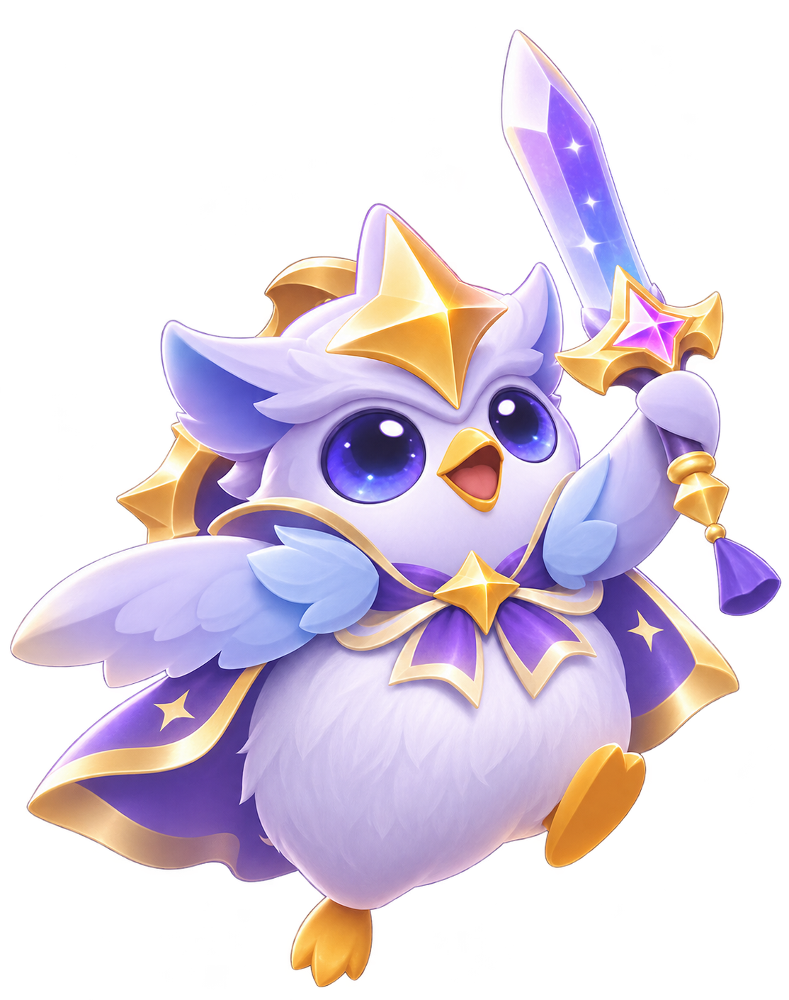
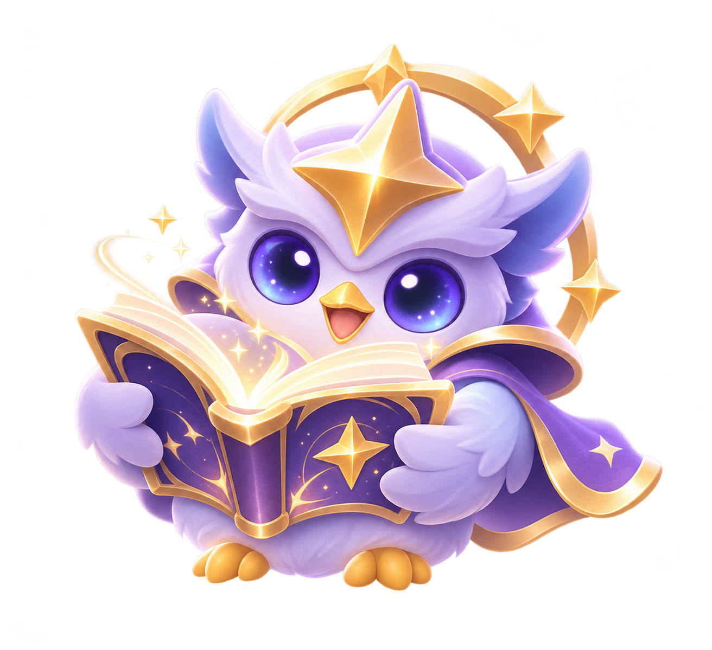
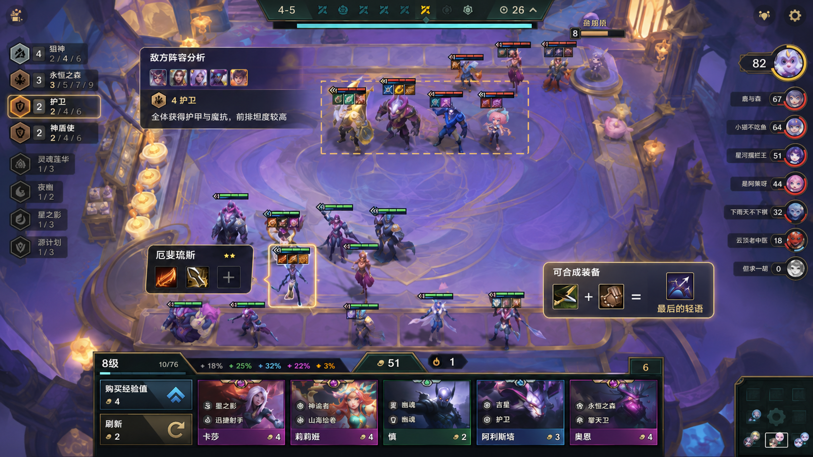
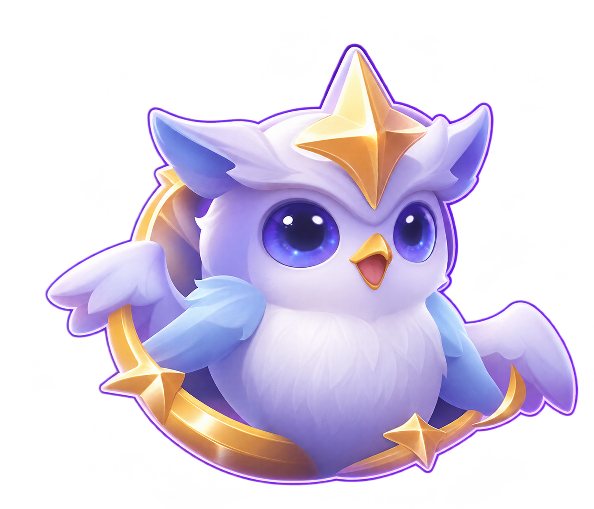
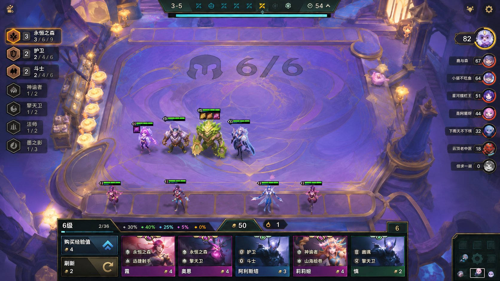
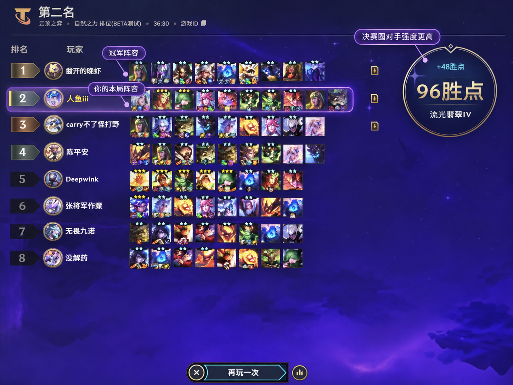

来啦！我是弈星。聊阵容、问装备，或者刚输了一局想吐槽，都可以找我。
如果要分析这局，先告诉我阶段、棋子和装备，我陪你一起想。
YIXING · YOUR COMPANION IN THE CONVERGENCE
每一步，都有“星”回应
懂棋局，也懂你。你的云顶之弈 AI 伴侣。




移动鼠标 · 感受棋局的涟漪
SCROLL TO DISCOVER ─────
01 / REAL-TIME STRATEGY DIALOGUE
功能一· 局内实时语音交互搭子不在，
也有人和你
分析战局。
看懂棋盘的变化，
接住你每一次犹豫。
弈星基于 OCR 图像识别读取局内信息，结合双方阵容、装备与运营局势，把复杂的决策线索，变成一句听得懂、用得上的建议。
本轮决策 · 局内策略辅助
物理后排主 C，遇上高护甲前排？
先看对手的四护卫，再看手里的反曲弓与拳套。优先补上破甲装备，并结合局势调整站位，让输出更有效地抵达目标。
- 01识别战局双方阵容 · 羁绊 · 备选装备
- 02理解处境物理主 C 遭遇高护甲前排
- 03给出建议优先破甲 · 调整站位
弈星 · 战局观察中ROUND 4-5


弈星等待分析
弈星建议：对面开了四护卫，前排护甲比较高。你手里的反曲弓加拳套正好能合成最后的轻语。给厄斐琉斯补上破甲，再调整一下站位，打前排会更舒服。滚动到这里，听弈星分析这一局
产品效果演示 · OCR 识别流程与语音波形为动效示意
02 / NEW-SEASON PLAYSTYLE GUIDE
功能二· 新兴流派教学 弈星 · 新流派讲解中ROUND 3-5

弈星
等待分析
弈星建议：你已经有 3 永恒之森了，这赛季能召唤植物参战。建议继续走这套，先保留过渡，存经济上八，再找厄斐琉斯补输出，不用现在硬转。滚动到这里，跟弈星学会新流派
产品效果演示 · 羁绊机制与阵容建议基于所提供场景 · 语音为动效示意
赛季换新，
熟悉的你也能
找到新打法。
不必从头摸索，
从手里的阵容，读懂新赛季。
回到云顶，羁绊和节奏已经悄悄换了模样。弈星结合当前棋盘讲解新兴流派，把新机制、过渡思路与后续补强连起来，帮你找到适合这一局的方向。
回流玩家 · 版本策略教学
手里已有永恒之森，还要急着转型吗？
来到 3-5，你已有霞、奥恩和阿利斯塔，却准备沿用旧赛季思路强行换阵。弈星解释 3 永恒之森的植物召唤机制，建议先保留过渡、存经济上八，再考虑补充厄斐琉斯。
- 01看懂起点已有棋子 · 当前羁绊 · 经济
- 02学会机制3 永恒之森 · 植物协同作战
- 03规划后续保留过渡 · 存钱上八 · 补输出
03 / POST-GAME REFLECTION
功能三· 战绩即时复盘不止看见输赢，
更看懂
下一步怎么赢。
一局结束，陪伴继续。
把这一局的遗憾，变成下一局的经验。
弈星结合单局表现与历史战绩，回看阵容运营、装备选择和临场调整。不只解释一个名次，更帮你发现反复出现的决策习惯，让复盘真正用在下一局。
赛后对话 · 从结果走向原因
为什么总在后期，差了最后一步？
从决赛圈对手的输出，到主 C 装备、前排承伤和站位，弈星陪你拆解关键问题。你也可以继续追问，把“没打过”变成具体的改进方向。
- 01回看本局阵容质量 · 装备分配 · 关键对手
- 02重振旗鼓接住失落情绪，陪你找回信心
- 03带走经验继续追问 · 明确下一局的调整
弈星 · 赛后复盘中POST-GAME

弈星
等待分析
演示流程：弈星安抚第二名的遗憾，玩家追问十棋子为何落败，弈星讲解对手保命装备与主 C 站位调整。按下回车键与弈星对话你 · 继续追问
滚动到这里，一起回看这一局
产品交互演示 · 追问展示预设反馈，不连接真实战绩或 AI 服务
04 / BEYOND THE GAME
功能四· 局外桌宠陪伴
局内是智囊，局外是搭子。
棋局有散场，陪伴不下线。
桌宠演示 · 约 10 秒循环
桌宠互动效果视频 · 展示非对局阶段的角色活动与界面融合
05 / MEET YIXING
弈星 Demo · 这次，真的可以聊。懂你的棋局，
也接住你的心情。
拖一拖，摸摸头，或者让弈星翻翻书。
有问题就问，它会陪你一起想。
陪着你
今天想玩什么阵容？弈星
版本资料核验中
弈星 你的云顶搭子
正在准备对话…
AI 建议供参考 · 本页不会自动读取棋盘 · 对话将发送至硅基流动处理
06 / OUR VISION
从一场好棋，
到一段好时光。
我们希望 AI 不只给出答案，更能理解玩家的节奏。在策略与情绪之间，创造更轻松、更有陪伴感的沉浸式游戏体验。
棋局有终，陪伴有续。
制作人：郝泽唯尔